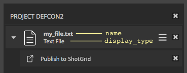

Publish API¶
The publish API gives developers access to the underlying data structures and methods used by the publish UI. They can use this interface to build more advanced custom publish workflows.
The primary interface to the API is the PublishManager class which
exposes the same collection, validation, publish, and finalize
methods that drive the Publisher UI. The manager contains a reference to a
PublishTree instance that operates on the hierarchy of
PublishItem instances (the “things” to be published), each of which
can have associated PublishTask instances that define how the
items are to be processed.
The code below shows how to execute a complete publish using this API:
# need to have an engine running in a context where the publisher has been
# configured.
engine = sgtk.platform.current_engine()
# get the publish app instance from the engine's list of configured apps
publish_app = engine.apps.get("tk-multi-publish2")
# ensure we have the publisher instance.
if not publish_app:
raise Exception("The publisher is not configured for this context.")
# create a new publish manager instance
manager = publish_app.create_publish_manager()
# now we can run the collector that is configured for this context
manager.collect_session()
# collect some external files to publish
manager.collect_files([path1, path2, path3])
# validate the items to publish
tasks_failed_validation = manager.validate()
# oops, some tasks are invalid. see if they can be fixed
if tasks_failed_validation:
fix_invalid_tasks(tasks_failed_validation)
# try again here or bail
# all good. let's publish and finalize
try:
manager.publish()
# If a plugin needed to version up a file name after publish
# it would be done in the finalize.
manager.finalize()
except Exception as error:
logger.error("There was trouble trying to publish!")
logger.error("Error: %s", error)
See the documentation for each of these classes below for more detail on how to use them.
PublishManager¶
This class gives developers direct access to the same methods and data structures used by the Publish UI. You can create an instance of this class directly via the configured publish app like this:
# need to have an engine running in a context where the publisher has been
# configured.
engine = sgtk.platform.current_engine()
# get the publish app instance from the engine's list of configured apps
publish_app = engine.apps.get("tk-multi-publish2")
# ensure we have the publisher instance.
if not publish_app:
raise Exception("The publisher is not configured for this context.")
# create a new publish manager instance
manager = publish_app.create_publish_manager()
-
class
tk_multi_publish2.api.PublishManager(publish_logger=None)[source]¶ This class is used for managing and executing publishes.
Initialize the manager.
Parameters: publish_logger – This is a standard python logger to use during publishing. A default logger will be provided if not supplied. This can be useful when implementing a custom UI, for example, with a specialized log handler (as is the case with the Publisher) -
collect_files(file_paths)[source]¶ Run the collection logic to populate the publish tree with items for each supplied path.
Each path supplied to this method will be processed by the configured collector hook for the current context. The collector will create PublishItem instances accordingly, each of which will be marked as
persistent.Parameters: file_paths (list) – A list of file paths to collect as items to publish. Returns: A list of the created PublishItem instances.
-
collect_session()[source]¶ Run the collection logic to populate the tree with items to publish.
This method will collect all session PublishItem instances as defined by the configured collector hook for the current context.
This will reestablish the state of the publish tree, recomputing everything. Any externally added file path items, or other items, marked as
persistentwill be retained.Returns: A list of the created PublishItem instances.
-
load(path)[source]¶ Load a publish tree that was serialized and saved to disk.
This is a convenience method that replaces the manager’s underlying PublishTree with the deserialized contents stored in the supplied file.
-
validate(task_generator=None)[source]¶ Validate items to be published.
This is done by running the
validate()method on each task in the publish tree. A list ofPublishTaskinstances that failed validation will be returned. An exception will be associated with every task that failed validation if one was raised. If no exception was raised, the second member of the tuple will beNone.By default, the method will iterate over the manager’s publish tree, validating all active tasks on all active items. To process tasks in a different way (different order or different criteria) you can provide a custom
task_generatorthat yieldsPublishTaskinstances.For example, to validate all items in the tree, without worrying about their active state:
def all_tasks_generator(publish_tree): for item in publish_tree: for task in item.tasks: yield task publish_manager.validate(task_generator=all_tasks_generator)
Parameters: task_generator – A generator of PublishTaskinstances.Returns: A list of tuples of ( PublishTask, optionalException) that failed to validate.
-
publish(task_generator=None)[source]¶ Publish items in the tree.
This is done by running the
publish()method on each task in the publish tree.By default, the method will iterate over the manager’s publish tree, publishing all active tasks on all active items. To process tasks in a different way (different order or different criteria) you can provide a custom
task_generatorthat yieldsPublishTaskinstances.For example, to publish all items in the tree that have a
local_publishflag set in their properties dictionary, you could do the following:def local_tasks_generator(publish_tree): for item in publish_tree: if item.properties.get("local_publish"): for task in item.tasks: yield task publish_manager.publish(task_generator=local_tasks_generator)
If an exception is raised by one of the published task, the publishing is aborted and the exception is raised back to the caller.
Parameters: task_generator – A generator of PublishTaskinstances.
-
finalize(task_generator=None)[source]¶ Finalize items in the tree.
This is done by running the
finalize()method on each task in the publish tree.By default, the method will iterate over the manager’s publish tree, finalizing all active tasks on all active items. To process tasks in a different way (different order or different criteria) you can provide a custom
task_generatorthat yieldsPublishTaskinstances.For example, to finalize all items in the tree that have a
generate_reportflag set in their properties dictionary, you could do the following:def report_tasks_generator(publish_tree): for item in publish_tree: if item.properties.get("generate_report"): for task in item.tasks: yield task publish_manager.finalize(task_generator=report_tasks_generator)
If an exception is raised by one of the finalized task, the finalization is aborted and the exception is raised back to the caller.
Parameters: task_generator – A generator of PublishTaskinstances.
-
context¶ Returns the execution context of the manager.
-
logger¶ Returns the manager’s logger which is used during publish execution.
-
collected_files¶ Returns a list of file paths for all items collected via the
collect_files()method.
-
tree¶ Returns the underlying PublishTree instance. :return:
-
PublishTree¶
-
class
tk_multi_publish2.api.PublishTree[source]¶ This class provides an interface for operating on a tree of items to be published. At a high level, the publish tree is structured like this:
[root] [item] Item 1 (A Publish Item) [task] Publish to Shotgun [task] Upload Media [item] Item 2 (A Publish Item) [task] Publish to Shotgun [task] Upload Media [item] Item 3 (A Publish Item) [task] Publish to Shotgun [task] Upload Media [item] Item 4 (A Child Item) [task] Re-rez [task] Alternate TranscodeThe tree is composed of a hierarchy of items. Each item in the tree, excluding the root, can have associated tasks.
Instances of this class are iterable, making traversal very easy:
for item in publish_tree: # process the item... for task in item.tasks: # process the task
The special,
root_itemis exposed as a property on publish tree instances. The root item is not processed as part of the validation, publish, or finalize execution phases, but it can be used to housepropertiesthat are global to the publish tree itself. All top-level publish items have theroot_itemas their parent and can store information there.For example, to collect a list of files to process after all publish tasks have completed (within the
post_finalize()method of thePostPhaseHook), you could do something like this:# in your publish plugin... def publish(self, settings, item): # do your publish... # remember the file to process later if item.parent.is_root: files = item.properties.setdefault("process_later", []) files.append(my_publish_file) # then, in your post_finalize... def post_finalize(publish_tree): # process files that were stored for later files = publish_tree.root_item.properties.get("process_later", [])
The class also provides an interface for serialization and deserialization of tree instances. See the
save_file()andload_file()methods.Initialize the publish tree instance.
-
static
load_file(file_path)[source]¶ This method returns a new
PublishTreeinstance by reading a serialized tree file from disk._sgtk_custom_typeParameters: file_path (str) – The path to a serialized publish tree. Returns: A PublishTreeinstance
-
clear(clear_persistent=False)[source]¶ Clears the tree of all items.
Parameters: clear_persistent (bool) – If True, all items will be cleared from the tree, including persistent items. Default isFalse, which will clear non-persistent items only.
-
pformat()[source]¶ Returns a human-readable string representation of the tree, useful for debugging.
This is the string printed by the
pprint()method.
-
pprint()[source]¶ Prints a human-readable string representation of the tree, useful for debugging.
Example:
manager = publish_app.create_publish_manager() manager.collect_session() # print the collected tree to the shell manager.tree.pprint() [item] Item 1 (A Publish Item) [task] Publish to Shotgun [task] Upload Media [item] Item 2 (A Publish Item) [task] Publish to Shotgun [task] Upload Media [item] Item 3 (A Publish Item) [task] Publish to Shotgun [task] Upload Media
-
remove_item(item)[source]¶ Remove the supplied item from the tree.
Parameters: item – The PublishItem instance to remove from the tree.
-
persistent_items¶ A generator of all persistent items in the tree.
-
root_item¶ Returns the root item of this tree.
-
static
PublishItem¶
-
class
tk_multi_publish2.api.PublishItem(name, type_spec, type_display, parent=None)[source]¶ Publish items represent what is being published. They are the nodes in the
PublishTree.Warning
You should not create item instances directly. Instead, use the
create_item()method of the parent you wish to create the item under.Parameters: - name – The display name of the item to create.
- type_spec – The type specification for this item.
- type_display – The type display string.
- parent – The parent item for this instance.
-
create_item(type_spec, type_display, name)[source]¶ Factory method for generating new items.
The
type_specis a string that represents the type of the item. This can be any string, but is typically defined by studio convention. This value is used by the publish plugins to identify which items to act upon.The basic Shotgun integrations, for example, use a hierarchical dot notation such as:
file.image,file.image.sequence,file.movie, andmaya.session.The current convention used within the shipped integrations is to classify files that exist on disk as
file.{type}(file.imageorfile.videofor example). This classification is determined from the mimetype in the base collector. In addition, any sequence-based items are classified asfile.{type}.sequence(file.image.sequencefor example).For items defined within a DCC-session that must be saved or exported prior to publish, the shipped integrations use the form
{dcc}.{type}for the primary session item and{dcc}.{type}.{subtype}for items within the session.In Maya, for example, the primary session item would be of type
maya.sessionand an item representing all geometry in the session would bemaya.session.geometry.These are merely conventions used in the shipped integrations and can be altered to meet studio requirements. It is recommended to look at each of the publish plugins shipped with the publisher and housed in each of the toolkit engines to see what item types are supported by default.
The
type_displayargument corresponds to the item type, but is used for display purposes only.Examples include:
Image File,Movie File, andMaya Scene.The
nameargument is the display name for the item instance. This can be the name of a file or an item name in Nuke or Houdini, or a combination of both. This value is displayed to the user and should make it easy for the user to identify what the item represents in terms of the current session or a file on disk.Parameters:
-
get_property(name, default_value=None)[source]¶ This is a convenience method that will retrieve a property set on the item.
If the property was set via
local_properties, then that will be returned. Otherwise, the value set viapropertieswill be returned. If the property is not set on the item, then the supplieddefault_valuewill be returned (default isNone).Parameters: - name (str) – The property to retrieve.
- default_value – The value to return if the property is not set on the item.
Returns: The value of the supplied property.
-
get_thumbnail_as_path()[source]¶ Returns the item’s thumbnail as a path to a file on disk. If the thumbnail was originally supplied as a file path, that path will be returned. If the thumbnail was created via screen grab or set directly via
QtGui.QPixmap, this method will generate an image as a temp file on disk and return its path.Warning
This property may return
Noneif run without a UI present and no thumbnail path has been set on the item.Returns: Path to a file on disk or None if no thumbnail set
-
remove_item(child_item)[source]¶ Remove the supplied child PublishItem of this item.
Parameters: child_item – The child PublishItem to remove.
-
set_icon_from_path(path)[source]¶ Sets the icon for the item given a path to an image on disk. This path will be converted to a
QtGui.QPixmapwhen the item is displayed.Note
The
iconis for use only in the publisher UI and is a small representation of item being published. The icon should not be confused with the item’sthumbnailwhich is typically associated with the resulting published item in Shotgun.Parameters: path (str) – Path to a file on disk
-
set_thumbnail_from_path(path)[source]¶ Sets the thumbnail for the item given a path to an image on disk. This path will be converted to a
QtGui.QPixmapwhen the item is displayed.Note
The
thumbnailis typically associated with the resulting published item in Shotgun. Thethumbnailshould not be confused with the item’siconwhich is for use only in the publisher UI and is a small representation of the item.Parameters: path (str) – Path to a file on disk
-
active¶ Returns the item’s active state if it has been explicitly set, None` otherwise.
Note
This property is shared with
checkedand can be used interchangeably to make code more readable depending on the context (with/without the UI).
-
checked¶ Boolean property to indicate that this item should be checked by default when displayed in a publish UI.
Note
This property is shared with
activeand can be used interchangeably to make code more readable depending on the context (with/without the UI).Please note that the final state of the node is also affected by the child tasks. Below are some examples of how this interaction plays out in practice:
- If all child tasks/items return
checked: Falsein their accept method, the parent item will be unchecked, regardless of the state of this property. - If one or more child tasks return
checked: Trueand the item checked state is False, the item and all its sub-items will be unchecked.
- If all child tasks/items return
-
children¶ A generator that yields the immediate PublishItem children of this item.
-
descendants¶ A generator that yields all the PublishItem children and their children of this item.
-
context¶ The
sgtk.Contextassociated with this item.If no context has been explicitly set for this item, the context will be inherited from the item’s parent. If none of this item’s parents have had a context set explicitly, the publisher’s launch context will be returned.
-
context_change_allowed¶ Enable/disable context change for this item.
Default is
True
-
description¶ The description of the item if it has been explicitly set,
Noneotherwise.
-
enabled¶ Boolean property which indicates whether this item and its children should be enabled within a publish UI.
-
expanded¶ Boolean property which indicates whether this item should be expanded to show its children when shown in a publish UI.
-
icon¶ The associated icon, as a
QtGui.QPixmap.The icon is a small square image used to represent the item visually

If no icon has been defined for this node, the parent icon is returned, or a default one if not defined
Warning
This property will return
Nonewhen run without a UI present
-
is_root¶ Returns
Trueif this the root PublishItem in the tree,Falseotherwise.
-
local_properties¶ A
PublishDatainstance that houses item properties local to the currentPublishPlugininstance. As such, it is expected that this property is only accessed from within a publish plugin. Attempts to access this property outside of a publish plugin will raise anAttributeError.This property behaves like the local storage in Python’s threading module, except here, the data is local to the current publish plugin.
You can get and set values for this property using standard dictionary notation or via dot notation.
It is important to consider when to set a value via
properties`and when to uselocal_properties.Setting the values on
propertiesis a way to globally share information between publish plugins. Values set vialocal_propertieswill only be applied during the execution of the current plugin (similar to Python’sthreading.localstorage).A common scenario to consider is when you have multiple publish plugins acting on the same item. You may, for example, want the
publish_nameandpublish_versionproperties to be shared by each plugin, while setting the remaining properties on each plugin instance since they will be specific to that plugin’s output. Example:# set shared properties on the item (potentially in the collector or # the first publish plugin). these values will be available to all # publish plugins attached to the item. item.properties.publish_name = "Gorilla" item.properties.publish_version = "0003" # set specific properties in subclasses of the base file publish # (this class). first publish plugin... item.local_properties.publish_template = "asset_fbx_template" item.local_properties.publish_type = "FBX File" # in another publish plugin... item.local_properties.publish_template = "asset_abc_template" item.local_properties.publish_type = "Alembic Cache"
Note
If you plan to serialize your publish tree, you may run into issues if you add complex or non-serializable objects to the properties dictionary. You should stick to data that can be JSON-serialized.
-
name¶ The display name of the item.
-
parent¶ The item’s parent PublishItem.
-
persistent¶ Boolean indicator that the item should not be removed when the tree is cleared.
-
properties¶ A
PublishDatainstance where arbitrary data can be stored on the item. The property itself is read-only. You can’t assign a differentPublishDatainstance.This property provides a way to store data that is global across all attached publish plugins. It is also useful for accessing data stored on parent items that may be useful to plugins attached to a child item.
For properties that are local to the current plugin, see
local_properties.This property can also be used to store data on an items that may then be accessed by plugins attached to the item’s children.
Note
If you plan to serialize your publish tree, you may run into issues if you add complex or non-serializable objects to the properties dictionary. You should stick to data that can be JSON-serialized.
-
tasks¶ Returns a list of all PublishTask instances attached to this item.
-
thumbnail¶ The associated thumbnail, as a
QtGui.QPixmap.The thumbnail is an image to represent the item visually such as a thumbnail of an image or a screenshot of a scene.
If no thumbnail has been defined for this node, the parent thumbnail is returned, or None if no thumbnail exists.
Warning
This will property return
Nonewhen run without a UI present
-
thumbnail_enabled¶ Boolean property to indicate whether thumbnails can be interacted with for items displayed in a publish UI.
- If
True, thumbnails will be visible and editable in the publish UI (via screen capture). - If
Falseand a thumbnail has been set via thethumbnailproperty, the thumbnail will be visible but screen capture will be disabled. - If
Falseand no thumbnail has been specified, no thumbnail will appear in the UI.
- If
-
thumbnail_explicit¶ Boolean property to indicate that a thumbnail has been explicitly set. When this flag is on, the summary thumbnail should be ignored for this this specific item.
-
type_spec¶ The type specification for this item. This specification typically follows a hierarchical dot notation. For example, ‘file’, ‘file.image’, or ‘file.movie’. This allows for a system whereby some publish plugins act on ‘file.*’ items (publish to SG for example) while other plugins may perform actions on a more specific set of items (for example uploading the media represented by ‘file.image’ or ‘file.movie’ items to SG as Versions). This is how the default integrations use this property on collected items.
-
type_display¶ The display string for this item’s type.
-
display_type¶ Warning
DEPRECATED. Use
type_displayinstead
PublishTask¶
-
class
tk_multi_publish2.api.PublishTask(plugin, item, visible=True, enabled=True, checked=True)[source]¶ Publish tasks represent the operations to be performed on a PublishItem in the PublishTree. Each item has a list of associated tasks that will be executed when a publish is initiated.
Each task wraps a configured publish plugin instance, storing the settings defined by that plugin that are specific to the item it is associated with.
Initialize the task.
-
active¶ Returns the item’s active state if it has been explicitly set, None` otherwise.
Note
This property is shared with
checkedand can be used interchangeably to make code more readable depending on the context (with/without the UI).
-
checked¶ Boolean property to indicate that this task should be checked by default when displayed in a publish UI.
Note
This property is shared with
activeand can be used interchangeably to make code more readable depending on the context (with/without the UI).
-
visible¶ Boolean property to indicate that this task should be visible in a publish UI.
Note
This property is shared with
activeand can be used interchangeably to make code more readable depending on the context (with/without the UI).
-
enabled¶ Boolean property to indicate that this task should be editable in a publish UI.
-
description¶ The description of the item if it has been explicitly set,
Noneotherwise.
-
item¶ The PublishItem this task is associated with
-
name¶ The display name of the task.
-
settings¶ A
dictof settings associated with this task.The keys of this dictionary are the setting names and the values are PluginSetting instances.
-
PublishData¶
-
class
tk_multi_publish2.api.PublishData(**kwargs)[source]¶ Bases:
_abcoll.MutableMappingA simple dictionary-like object for storing/serializing arbitrary publish data.
Provides access via standard dict syntax as well as dot notation. This is used as the base class for any arbitrary data exposed by the publish API including internal representation of settings (as configured or modified by the UI) and publish item properties.
Note
Developers should not create instances of this class. Instances of
PublishDataare exposed via properties and settings of other classes.
PluginSetting¶
-
class
tk_multi_publish2.api.PluginSetting(name, data_type, default_value, description=None)[source]¶ Bases:
tk_multi_publish2.api.data.PublishDataThis class provides an interface to settings defined for a given PublishTask.
This class derives from PublishData. A few special keys are set by default and are accessible after initialization. Those keys are:
default_value: The default value as configured for this setting.description: Any description provided for this setting in the config.name: The display name for this setting.type: The type for this setting (bool,str, etc).value: The current value of this setting.
Note
There is typically no need to create instances of this class manually. Each PublishTask will expose a dictionary of configured
PluginSettings.-
string_value¶ The setting value as a string.